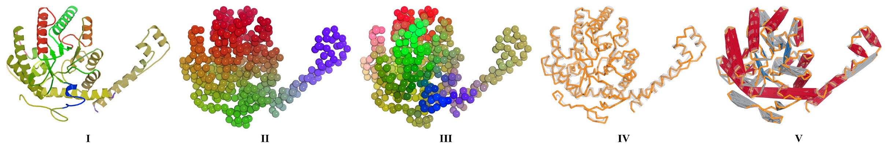
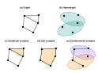
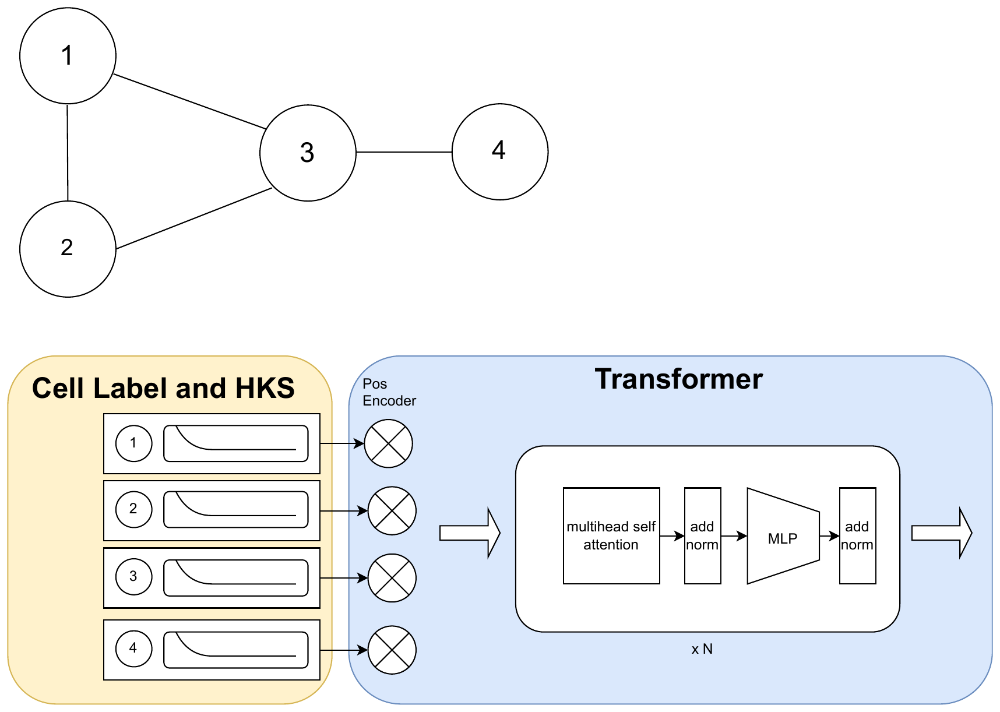
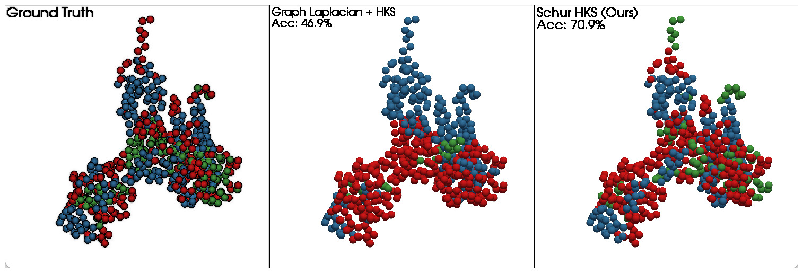
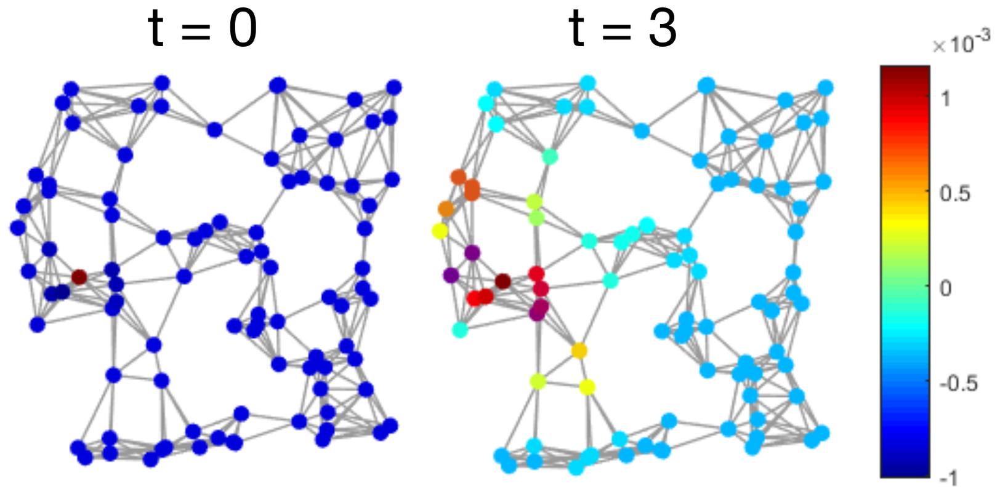

An effective operator on the vertices that captures the influence of the higher-order structure, without handcrafted aggregation schemes or domain-specific heuristics.
ICML 2026
International Conference on Machine Learning
Collapsed Effective Operators
for Higher-order Structures
Imperial College London · Aalto University · Technical University of Munich (TUM) · Munich Center for Machine Learning (MCML) · YaiYai Ltd
* Equal contribution · † Equal senior authorship
01 Abstract
Higher-order structures are powerful relational modeling tools, yet existing spectral operators decompose the topology into separate ranks, leaving practitioners to fuse the information back to vertices through ad hoc choices.
We introduce Collapsed Effective Operators, which condense higher-order degrees of freedom into a single vertex-level operator via Schur complementation of a graded Laplacian. This yields a (generally dense) operator that encodes long-range interactions mediated by topology and is applicable to arbitrary higher-order constructs. We show it preserves positive semi-definiteness with a spectral upper bound relative to the rank-0 Hodge Laplacian, effectively lowering system energy under higher-order connectivity. Empirically, our operator improves spectral clustering, signal smoothing, and enables the inclusion of topological features in neural network architectures via positional encoding.

02 Higher-order structures, one signal
Graphs have emerged as a universal language for relational data, but they are fundamentally dyadic and cannot represent higher-order interactions directly. The collective behavior of complex systems, from protein complexes and chemical reactions to neural circuits and collaborative networks, is instead polyadic: it emerges from the simultaneous interaction of many components. Hypergraphs, simplicial complexes, and combinatorial complexes capture this richness.
Yet across these settings, the signal of interest usually lives on one specific rank, the vertices. Classical spectral operators such as the Hodge Laplacian decompose the topology rank by rank, which leaves a persistent fusion problem: how should rank-specific representations be combined to inform node-level predictions? Collapsed effective operators remove this question by construction.

03 The idea in one operator
Our approach is inspired by the physics of effective theories, where a system is simplified by integrating out the degrees of freedom that are not directly observable. We apply the same idea to signals on topological structures: rather than computing dynamics across every cell rank, we marginalize the higher-order cells onto the vertices through the Schur complement of a graded Laplacian:
\[ \mathbf{S} \;=\; \mathbf{A} \;-\; \mathbf{X}\,\mathbf{C}^{-1}\mathbf{X}^{\!\top} \]
We split each signal into the vertex part we keep and the higher-order part we eliminate, leaving the vertex block \(\mathbf{A}\), the internal edge-, face-, and higher-cell dynamics \(\mathbf{C}\), and their coupling \(\mathbf{X}\). For a fixed vertex signal, the collapse chooses the higher-order values that make the total energy as small as possible; substituting them back, \(\mathbf{X}\mathbf{C}^{-1}\mathbf{X}^{\!\top}\) records the vertex-level energy absorbed by the eliminated cells. The result acts on the nodes alone, is positive semi-definite, and carries a clear energy interpretation, with \( \mathbf{0} \preceq \mathbf{S} \preceq \mathbf{A} \).
The operator is positive semi-definite and admits a clear spectral interpretation, reducing the effective conductance between nodes that share a common cell.
It aggregates topological features such as isolated cells down to the node level, which existing Laplacians cannot easily model.
We never form \(\mathbf{S}\) explicitly; a regularized solver applies its action through the sparse block structure of the lifted space.
04 Method
We assemble a graded Laplacian \(\mathbf{L}^{\star}\), a symmetric, block-tridiagonal operator over the graded cochain space. Its diagonal blocks are weighted rank-local (Hodge) Laplacians, and its off-diagonal blocks couple adjacent ranks through the boundary maps. Unlike the Hodge Laplacians, which act separately at each rank, \(\mathbf{L}^{\star}\) is a single operator on the entire complex.
Splitting \(\mathbf{L}^{\star}\) into the vertex block \(\mathbf{A}\), the higher-order block \(\mathbf{C}\), and their coupling \(\mathbf{X}\), we marginalize the higher-order cells by Schur complementation. In practice \(\mathbf{C}\) can be singular, since its kernel encodes homology. We therefore apply a regularized form with controlled error, and never form the operator explicitly:
\[ \mathbf{S}_{\varepsilon} \;=\; \mathbf{A} \;-\; \mathbf{X}\,(\mathbf{C} + \varepsilon\mathbf{I})^{-1}\mathbf{X}^{\!\top} \]
Its action \(\mathbf{S}_{\varepsilon}\mathbf{v}\) reduces to sparse, preconditioned conjugate-gradient solves, amortizing the higher-order cost to preprocessing while preserving the sparsity of the boundary structure.

05 Results

Recovering protein secondary structure
On the Topotein benchmark, we segment protein secondary structure by clustering Heat Kernel Signatures. The graph Laplacian cannot capture interleaved helices and sheets; our effective operator recovers these non-local structures, raising accuracy from 46.9% to 70.9% without supervision.

A topologically selective filter
As a smoothing operator, \(\mathbf{S}_{\varepsilon}\) suppresses noise while preserving higher-order structure. When spurious shortcut edges are injected into a geometric graph, the graph Laplacian's reconstruction error climbs ~50%, while ours stays nearly flat.
| Shortcut edges | \(\mathbf{L}^{G}\) | \(\mathbf{L}^{\text{mult}}\) | \(\mathbf{S}_{\varepsilon}\) |
|---|---|---|---|
| 0 | 0.066 | 0.074 | 0.066 |
| 100 | 0.082 | 0.081 | 0.074 |
| 150 | 0.092 | 0.088 | 0.072 |
| 200 | 0.099 | 0.094 | 0.073 |
Reconstruction MSE on a random geometric graph (lower is better).
Topology as positional encoding
Spectral positional encodings from \(\mathbf{S}_{\varepsilon}\) (SchurPE) improve node classification on proteins, beating standard Laplacian encodings across both GCN and Graph Transformer backbones on the Contact and ResType tasks.
| Model + PE | Contact | ResType |
|---|---|---|
| GCN + NoPE | 0.471 | 0.524 |
| GCN + LaplacePE | 0.480 | 0.582 |
| GCN + SchurPE | 0.494 | 0.666 |
| GT + NoPE | 0.463 | 0.773 |
| GT + LaplacePE | 0.551 | 0.762 |
| GT + SchurPE | 0.573 | 0.789 |
Node-classification accuracy on proteins-as-combinatorial-complexes. Best per block in bold.
06 Citation
@inproceedings{krahn2026collapsed,
title = {Collapsed Effective Operators for Higher-order Structures},
author = {Krahn, Maximilian and Bastian, Lennart and Garg, Vikas
and Schuller, Bj{\"o}rn and Birdal, Tolga},
booktitle = {Proceedings of the 43rd International Conference
on Machine Learning (ICML)},
year = {2026},
}